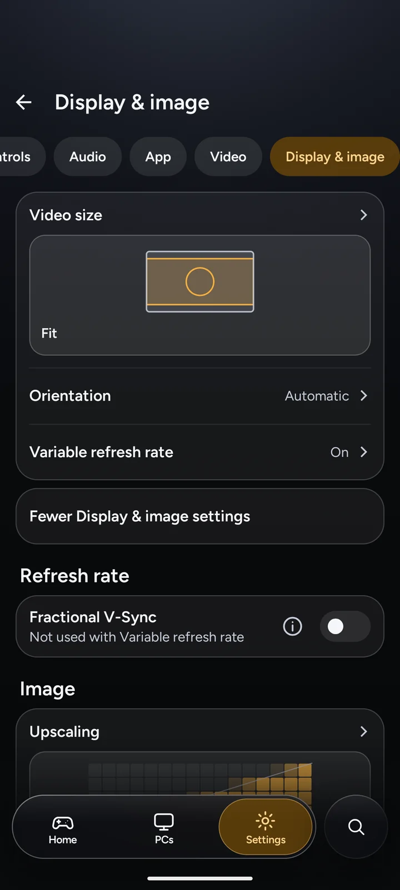
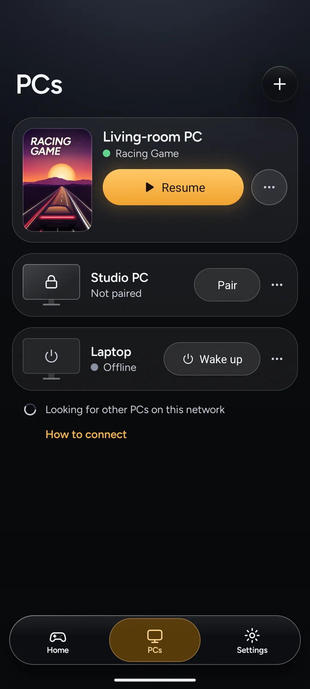

Shared Rust streaming engine
One Rust core powers Android, Windows, Linux and macOS—with per-chip low-latency decoder tuning, decoder receive priority, non-blocking input hand-off and phase-lock timing.
Low-latency core
Stream your PC to Android, Android TV, Windows, Linux and macOS.
Your games, your desktop, your controls. Powered by a shared Rust streaming engine built for immediate response, steady frame pacing and sharp HDR across any Moonlight-compatible host.
Android 7.1+ · Android TV & Fire TV · Windows · Linux & Steam Deck · macOS · Free and open source

Your PC’s streaming host runs your games and apps.
Video and audio travel to your handheld, phone, TV or computer.
Your input goes straight back to your PC with minimal delay.
From your first input to the next refresh. Engineered to stay responsive and tear-free on real screens and networks.
One Rust core powers Android, Windows, Linux and macOS—with per-chip low-latency decoder tuning, decoder receive priority, non-blocking input hand-off and phase-lock timing.
Low-latency core
On VRR and Android adaptive screens, frames present on the game’s own rhythm. Fixed high-refresh panels hold an even cadence, while wired desktop PyroWave draws rows before the frame finishes.
Real VRR · Phase lock · Beam racing
With a Rubylight PC, mouse and right-stick camera turns reflect on your very next display refresh while keeping the game’s HUD locked firmly in place.
Instant camera response
AV1, HEVC and H.264 hardware decoding plus GPU-accelerated PyroWave (including Apple Silicon macOS), with HDR10, HDR10+, HLG, Dolby Vision, clean HDR-to-SDR tone-mapping and sharp 4:4:4 text.
HDR10+ · Dolby Vision · PyroWave 4:4:4
Sharp spatial scaling built right in: AMD FSR 1 and Snapdragon GSR on Android, Apple MetalFX on macOS and GPU video upscaling on Windows.
FSR · Snapdragon GSR · MetalFX
Every paired PC’s games on one Home across Night, Day, OLED Black and High-Contrast themes—with store shelves, Quick Suspend & resume, Auto UI scaling on desktop/TV and Wake-on-LAN.
Home · Quick Suspend · 4 themes
Open the 8-module Control Center mid-stream to adjust bitrate, Radeon/NVIDIA profiles, party audio or window mode, save instant replay clips, move sessions with Continue here and share files or USB.
Control Center · Clips · USB · Coherence
Join friends as a guest or take a split-screen co-op seat with per-player microphones, wake your PC away from home, stream over Tailscale or direct P2P without port forwarding, and roam seamlessly.
Guests · Party audio · Direct P2P · Wake relay



Pick up your controller. Reach for the touchscreen. Or keep your mouse and keyboard.
Connect USB and Bluetooth controllers with DualSense haptics and gyro. Remap buttons, tune stick curves and switch Xbox, PlayStation or Nintendo face layouts visually.
Use direct touch, a natural trackpad or a desktop cursor. Arrange separable touch controls on an 8 dp snap grid with custom opacity, or open the full PC keyboard.
See FPS, latency stages and frame loss in the performance capsule. Open Stream Doctor for plain-English bottleneck checks and share a redacted report anytime.
Local discovery finds your host automatically. Wake-on-LAN and away wake relays bring your PC online whenever you’re ready to play.
Video and audio to you. Your controls back to your PC.
One PC. Any Android device, TV or computer. Any Moonlight-compatible host.
Download Nightjar from the latest release: install the APK on Android or Android TV, run the setup.exe installer on Windows, install the .deb, .rpm, AppImage or Flatpak on Linux, or move Nightjar.app to Applications on macOS.
Start your PC’s streaming host, for example Apollo, Rubylight, Sunshine or Vibepollo. Connect your PC and your device to the same network.
Select your PC in Nightjar, or choose “Add PC”. Scan the QR code shown in Rubylight’s console, or enter the 4-digit PIN in your host’s web UI. If your host has per-device permissions, grant app-list, stream, launch and input access.
Choose a game or your desktop. Pick a preset or tune your picture and controls, then play.
